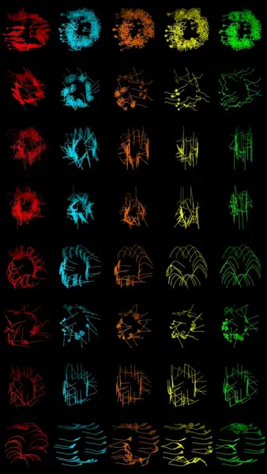

ACADEMIC PROFILE / COMPLETE CURRICULUM
Education, experience
& academic activities.
A detailed record of academic training, research positions, teaching, scientific activities and other achievements.
Introduction
- Job profile
-
Postdoctoral research fellow in Computational Neuroscience
- Main topics
-
Modeling, algorithms and data-analysis for brain’s multi-scale spatio-temporal features
- Web links
-
ORCID:0000-0002-6572-0434 | Github | ResearchGate | Google Scholar | Scopus | IRIS · University of Pavia | DBLP
- Current position
-
Postdoctoral research fellow at University of Pavia, Department of Brain and Behavioural Sciences, Egidio D’Angelo’s Lab, Pavia, Italy (albertoarturo.vergani@unipv.it)
- Affiliations & networks
-
Member, Global Burden of Disease (GBD) Collaborator Network · Institute for Health Metrics and Evaluation (IHME)
Pillar 1: Computational intelligence for representation, clustering and network analysis. I developed computational methods for high-dimensional neuroimaging, including an FSL-based hybrid brain atlas and Activation Weighted Vectors [related publications]; fuzzy, competitive-learning and soft-classification methods for functional neuroimaging [related publications]; and a soft Davies–Bouldin index for non-crisp cluster validation [related publications]. I further applied spectral, functional-connectivity and random-matrix approaches to resting-state fMRI and recurrent network-state identification [related publications]. These contributions formed the core of my PhD research in computational intelligence for functional neuroimaging [related publications].
Pillar 2: Algorithms for electrophysiological signal processing and phenotyping. I extended this algorithmic framework to neural time series, developing pipelines for preprocessing, temporal and spectral feature extraction, ERP analysis and data-driven phenotyping. Starting from cognitive reserve [related publications], I applied these methods to cognitive decline [related publications], machine-learning and personalized modelling of Alzheimer’s disease [related publications], Parkinson’s disease [related publications], cognitive load [related publications], autism [related publications], ataxia [related publications], and ex vivo electrophysiology [related publications]. I also developed computational approaches for TMS electrophysiology in genetic epilepsy [related publications] and for recovering neural activity from extreme TMS–EEG artifacts [related publications].
Pillar 3: Mechanistic modelling, neuromorphic computing and digital brain simulation. I developed multiscale computational models ranging from spiking and neuromorphic networks for associative memory, critical dynamics and anticipatory processing [related publications] to personalized and mechanistic brain models. This includes cerebellar models of degeneration, compensation and network dysfunction in schizophrenia [related publications], as well as multiscale models integrating numerical electric-field dosimetry with neural dynamics [related publications]. Overall, my work connects data-driven algorithms with computational models for extracting, reproducing and explaining complex neural dynamics.
Minor: History of neuroscience, brain-art and digital education
I explore the history of neuroscience, from its theoretical [related publications] to anatomo-physiological foundations [related publications]; neuroscience-inspired digital creativity through Neural Turing Patterns, Berger Mandalas, and Neural Graffiti; and education strategies in digital era of neuroscience [related publications].
Prizes, Proposals and Fellowships
Prizes
Best Review Article Award, Advances in Physiology Education. Awarded by the American Physiological Society for the article: Vergani, A. A. (2024). “Hans Berger (1873-1941): the German psychiatrist who recorded the first electrical brain signal in humans 100 years ago”. Advances in Physiology Education. [related publications] DOI: 10.1152/advan.00119.2024.
Best Poster Award at Dynamics and Complexity workshop (DCP25, Pisa, 9-11 July 2025). Title of the poster: "Cerebellar Resilience Modulates Deep Nuclei Overdrive and Sensorial Dysmetria Across the Schizophrenia Continuum" (Vergani AA, Faris P, De Grazia M, Casellato C, D’Angelo UE) [related publications]
1st ranked at Brain and Art Prize at Organization of Human Brain Mapping (OHBM) conference in Brisbane (June 25, 2025 - June 28, 2025), for the Open Science Creations section, with the artwork Berger Mandalas
1st ranked at Brain and Art Prize at Organization of Human Brain Mapping (OHBM) conference in Glasgow (June 19, 2022 - June 23, 2022), for the section Beautiful Mistakes, with the artwork Neural Turing Patterns
Best Poster Award at Dynamics and Complexity workshop (DCP22, Pisa, 26-28 May 2022). Title of the poster: "Mean field model of resting state cortical dynamics in prodromics phases of Alzheimer’s diseases" (Amato LG, Vergani AA, Mannella R, Mazzoni A) [related publications]
2nd ranked at Brain and Art Prize, NeuroMarseille, with Neural Turing Patterns. The artwork has been exposed in Marseille at La Pangoline Gallery during the Fall 2021 and it will be exposed during the Fall 2022 at campuses of Aix-Marseille Université (for more details see the Brain Art section [Neuroscience Art]
Best Conference Paper with the Taylor and Francis prize for the section Imaging and Visualization at the 15th International Symposium on Computer Methods in Biomechanics and Biomedical Engineering and 3rd Conference on Imaging and Visualization (CMBBE2018, Lisbon, 26-28 March 2018). Title of the paper: "Resting State fMRI Functional Connectivity Analysis Using Soft Competitive Learning Algorithms". After the prizewinning, the conference paper has been extended and published as research article: Vergani AA, Martinelli S, Binaghi E (2020). Resting state fMRI analysis using unsupervised learning algorithms. Computer Methods in Biomechanics and Biomedical Engineering: Imaging and Visualization, 8(3), 252-265. [related publications]
Winning Proposals
Proposal at SIPF 2025 (Italian Society of Psychophysiology and Cognitive Neurosciences) for organizing the symposium Tracing Brain Evolution Through Fossils and Digital Models, focused on large-scale brain adaptation through paleo-neurology and computational modeling. Speakers: Dr. Carmela Serio (University of Napoli Federico II), Dr. Marina Melchionna (University of Napoli Federico II), and Dr. Gabriele Sansalone (University of Modena and Reggio Emilia / University of New England). The symposium was held in Verona on 17 September 2025.
Winning proposal for the CNS*2025 (Organization for Computational Neurosciences) workshop Multiscale Modeling of Electromagnetic Field Perturbations on Neural Activity, organized with Prof. Claudia Casellato and held in Florence on 8 July 2025. The final programme lists Davide Momi (Stanford University), Gianluca Gaglioti (University of Milan), Esra Neufeld (IT’IS Foundation), Marius Pille (Universitätsmedizin Berlin), Micol Colella (Sapienza University), Marialaura De Grazia (University of Pavia), and Daniele Linaro (Politecnico di Milano).
Proposal at SIPF 2024 (Italian Society of Psychophysiology and Cognitive Neurosciences) for organizing a symposium on Sport Neuroscience titled Decoding Sports Performance: Investigating the neural correlates of anticipation functions prior to action, featuring speakers: Prof. Valentina Bianco (UNIPV), Prof. Francesco Di Russo (Uniroma4), and Prof. Germano Gallicchio (Bangor University).
Proposal for THRUSTER initiative with the business idea helmEEG, concerning the integration of soft EEG electrodes in a crash helmet, in collaboration with Prof. Flavia Vitale (UNIPENN).
Co-winner of EELISA grant for organizing a spring school “Ethos + Tekhnè: a new generation of AI researchers”, in collaboration École normale supérieure (Stefano Vrizzi) in Paris and with Scuola Normale Superiore in Pisa (Laura State, Filippo Galli). The school was held in Pisa, 6-10 March 2023.
Fellowships and other mentions
2024–2025Postdoctoral Fellowship at the University of Pavia, Department of Brain and Behavioral Sciences, Egidio D’Angelo’s Lab, Neurocomputing subunit (headed by Prof. Claudia Casellato), working on the project Construction and Simulation of Cerebellar Neural Networks for Brain Digital Twins Applied to Schizophrenia, funded by Virtual Brain Twin (VBT) (EU Horizon Europe, grant agreement 101137289), under the supervision of Prof. Egidio D’Angelo.
2023–2024Postdoctoral Fellowship at SSSA, The BioRobotics Institute, Pisa-Pontedera (IT) through TMSpath, funded by the Italian Ministry of Health (Ricerca Finalizzata 2021, grant RF-2021-12372804; CUP G15E22001160001) - working on electrophysiological correlates of transcranial magnetic stimulation as a surrogate for pathophysiology in genetic epilepsy, supervised by Prof. Alberto Mazzoni
2021–2023Postdoctoral Fellowship at SSSA, The BioRobotics Institute, Pisa-Pontedera (IT) through PREVIEW, funded by Tuscany Region (Bando Salute 2018, project 20RSVB; Sant’Anna CUP D18D20001300002), working on electrophysiological correlates of prodromal forms of dementia, such as subjective cognitive decline and mild cognitive impairment, with the aim to find functional biomarkers able to predict the prodomic path of the patients, supervised by Prof. Alberto Mazzoni.
2020–2021Postdoctoral Fellowship at INT Marseille (FR) through Horizontal-V1, funded by the French National Research Agency (grant ANR-17-CE37-0006), working on the project Visual cortex modelling with classic and neuromorphic machines, supervised by Prof. Laurent Perrinet and Prof. Frédéric Chavane. The cross-talk between physiological and theoretical approaches was fostered by the close collaboration with the teams of Frédéric Chavane at INT and Yves Frégnac at UNIC. The theoretical work is performed in close collaboration with Lyle Muller (Western U) and Jan Antolik (Prague).
2019–2020Postdoctoral Fellowship at Middlesex University (UK) through the Human Brain Project (HBP) (EU Horizon 2020, grant agreement 720270), working on NEAL (Neuromorphic Embodied Agents that Learn), headed by Prof. Chris Huyck, that is part of the SP9 Neuromorphic Subproject. The main task was to develop agents for virtual environments implemented in simulated and emulated spiking neurons.
2015–2018Italian PhD Fellowship for the PhD program in Computer Science and Computational Mathematics (XXXI Cicle), University of Insubria, Department of Theoretical and Applied Science, Varese, Italy. The research activities were at CRAIIM, Centre for Research in Image Analysis and Medical Informatics, headed by Prof.ssa Elisabetta Binaghi, in collaboration with the Medical Physics Unit, the Neurosurgery Unit and the Functional Neuroradiology Unit, at Hospital of Varese (Circolo e Fondazione Macchi). Thesis projects: Contributions in computational intelligence with results in functional neuroimaging. Supervisor: Prof. Elisabetta Binaghi.
2014–2018Travel Grants by Human Brain Project (HBP) and Partnership for Advanced Computing in Europe (PRACE) for attending schools, workshops and short classes.
Civil recognition by the Major of Cairate (VA), Italy.
Academic Information
Positions
2024–2026Postdoctoral research fellow
- College
University of Pavia, Pavia, IT
- Division
Department of Brain and Behavioral Sciences
- Lab
Egidio D’Angelo’s Lab
- Sub-Unit
Neurocomputation
- Supervisors
Prof. Egidio D’Angelo, Prof. Claudia Casellato
- Project
Construction and simulation of cerebellar neural networks for brain digital twins applied to schizophrenia, within Virtual Brain Twin (VBT) — Virtual Brain Twin for personalised treatment of Psychiatric Disorders.
- Project PI
Prof. Egidio D’Angelo
- Fund
European Union, Horizon Europe — Virtual Brain Twin (VBT). Grant agreement 101137289.
- Italian SSD
BIO/09 - Physiology
- Outcomes
- Topics
Designing bio-inspired digital brain replica
Investigating the cerebellum’s role in psychiatric diseases
Understanding the etiopathogenesis of schizophrenia
2023–2026Postdoctoral research fellow
- College
Sant’Anna School of Advanced Studies, Pisa, IT
- Division
The BioRobotics Institute
- Lab
Computational Neuroengineering Lab, headed by Prof. Alberto Mazzoni
- Supervisor
Prof. Alberto Mazzoni
- Project
- Project PI
Prof. Simona Balestrini (MEYER IRCCS, UNIFI)
- Clinical Trial
- Fund
Italian Ministry of Health — Ricerca Finalizzata 2021. Grant RF-2021-12372804; CUP G15E22001160001.
- Italian SC
Settore Concorsuale 09/G2
- Italian SSD
ING-INF/06 - Bioingegneria Elettronica e Informatica
- Outcomes
- Topics
Pathophysiology in genetic epilepsies
Simultaneous TMS stimulations and EEG recordings
EEG processing and TEP analysis
2021–2023Postdoctoral research fellow
- College
Sant’Anna School of Advanced Studies, Pisa, IT
- Division
The BioRobotics Institute
- Lab
Computational Neuroengineering Lab, headed by Prof. Alberto Mazzoni
- Supervisor
Prof. Alberto Mazzoni
- Project
- Project PI
Prof. Valentina Bessi (CAREGGI AOU, UNIFI)
- Clinical Trial
- Fund
Tuscany Region — Bando Salute 2018. Project code 20RSVB; Sant’Anna CUP D18D20001300002.
- Italian SC
Settore Concorsuale 09/G2
- Italian SSD
ING-INF/06 - Bioingegneria Elettronica e Informatica
- Outcomes
- Topics
Neurophysiology of degenerative disorders
Brain cognitive reserve biomarkers
EEG analysis and modeling
2020–2021Postdoctoral research fellow
- College
University of Aix-Marseille, Marseille, FR
- Division
Institut de Neuroscience de la Timone
- Lab
NeOpTo group, headed by Prof. Frederic Chavane
- Supervisor/PI
Prof. Laurent Perrinet
- Project
Horizontal-V1 — Horizontal connectivity and prediction of coherence in contour and motion integration in primary visual cortex. Research focus: visual cortex modelling with classic and neuromorphic machines.
- Fund
French National Research Agency (ANR) — Horizontal-V1. Grant ANR-17-CE37-0006.
- Outcomes
- Topics
Primary visual cortex modeling and simulations
Sensory-evoked traveling waves and dynamic neuronal association fields
Optical imaging, psychophysics, and neural basis of Gestalt principles
2020–2021Postdoctoral research fellow
- College
Middlesex University, London, UK
- Division
Department of Computer Science
- Lab
Chris Huyck’s lab
- Supervisor/PI
Prof. Chris Huyck
- Project
NEAL — Neuromorphic Embodied Agents that Learn, within the Human Brain Project (SP9 Neuromorphic Computing).
- Fund
European Union, Horizon 2020 — Human Brain Project. Grant agreement 720270.
- Outcomes
- Topics
Cognitive agents modeling with spiking neural networks
Neuromorphic simulations via HBP infrastructures (SpiNNaker and BrainScaleS)
Cell assemblies theory and models, attractor networks
Master thesis internship
- Degree
MSc in Cognitive Science, curriculum in Decision Processes
- College
University of Milan, IT
- Lab
Raffaella Folgieri’s lab
- Supervisor
Prof. Raffaella Folgieri
- Project
Electrophysiological data analysis acquired via Brain-Computer Interface
- MSc thesis
Computational science and emergent neuroinformatics technologies (Ref: [related publications])
- Topics
- Brain-Computer Interface (BCI)
- Spatio-temporal data analysis and Electrophysiology
- History of Artificial Intelligence (co-supervisor: Prof. Gianfranco Prini)
Bachelor thesis internship
- Degree
BSc in Psychology, curriculum in Neuroscience
- College
Vita-Salute San Raffaele University, Milan, IT
- Division
Nuclear Medicine Unit
- Supervisor
Prof. Daniela Perani
- Project
State of the art about the brain and cognitive reserve hypotesis
- BSc thesis
The reserve of cognitive functions in dementia (Ref: [related publications])
- Topics
Brain and Cognitive reserve hypothesis
Structural and functional neuroimaging
Brain plasticity processes in dementia
Collaborations
2022–presentProf. Mark Richardson, Harvard Medical School, Boston, USA
- Joint topics
- Computational study of Parkison’s disease pathophysiology
- Embedding humans cortical recordings in a basal ganglia model
- Data analysis of humans subcortical recordings (STN and GPe nuclei)
2020–presentProf. Stefania Boffa, University of Milano-Bicocca, IT
- Joint topics
- Many-valued logics calculus
- Fuzzy and rough set theory
- Mathematics of machine learning
Visiting periods
Harvard Medical School, Boston, Massachusetts, USA
- Lab
Brain Modulation Lab, MGH
- Tutors
Prof. Mark Richardson and Prof. Alan Bush
- Topics
- Computational study of Parkison pathophysiology
- Embedding humans cortical recordings in a basal ganglia model
Kirchhoff-Institut für Physik, Heidelberg, DE
- Lab
Electronic Vision(s) lab
- Tutor
Prof. Sebastian Smith
- Topics
- Induction on the BrainScaleS neuromorphic hardware
- Implementation of a Finite State Machine on BrainScaleS
2018 · SpringMiddlesex University, London, UK
- Lab
Artificial Intellgence Lab
- Tutor
Prof. Chris Huyck
- Topics
- Induction on the Neuromorphic Computing Platform of Human Brain Project (HBP)
- Modeling of neurocognitive agents by using PyNN, Nest and sPyNNaker
2017 · AutumnCNR, Institute of Biophysics, Palermo, IT
- Lab
Computational neuroscience lab
- Tutor
Prof. Michele Migliore
- Topics
- Induction on the Brain Simulation Platform of Human Brain Project (HBP)
- Modeling cellular level model of the hippocampus with NEURON and python.
Teaching
Computational Neuroscience. 12h, Introduction to Algorithms for Modeling Virtual Brain Twins, MSc in Psychology, University of Pavia, IUSS, Italy
Computational Neuroscience. 5h inside the bachelor class on Brain modeling (BIO/09) (Prof. Claudia Casellato), BSc in Artificial Intelligence, University of Pavia-Bicocca-UNIMI
Computational Neuroscience. 4h inside the master class on Brain modeling (BIO/09) (Prof. Claudia Casellato), MSc in Psychology, University of Pavia
Computational Neuroscience. 4h inside the master class on Brain modeling (BIO/09) (Prof. Claudia Casellato), MSc in Human-Centered IA, Pavia-Bicocca-UNIMI
Computational Neuroscience. 12h, Introduction to Algorithms for Modeling Virtual Brain Twins, MSc in Psychology, University of Pavia, IUSS, Italy
Computational Neuroscience. 5h inside the bachelor class on Brain modeling (BIO/09) (Prof. Claudia Casellato), BSc in Artificial Intelligence, University of Pavia-Bicocca-UNIMI
Neuroeconomics. 6h inside the Master class on Behavioural Economics (SECS-P/01) (Prof: Chiara Rapallini), Master Degree in Economics, University of Florence, Florence, Italy.
2024 · SpringAdjunct Professor in Numerical methods (FIS/01) (Neuroscience module). 8h, Master degree in Physics, University of Pisa, Italy
Computational Neuroscience. 3h inside the Master class on Biorobotics and Complex Systems (FIS/03) (Prof: Alberto Mazzoni), Physics Degree, University of Pisa, Italy.
Computational Neuroscience. 3h inside the PhD class on Information Theory and Neural Modeling for Neural Engineering (ING-IND/34) (Prof: Alberto Mazzoni), PhD Program in Biorobotics, Scuola Superiore Sant’Anna, Pisa, Italy.
Computational Neuroscience. 5h inside the bachelor class on Brain modeling (BIO/09) (Prof. Claudia Casellato), BSc in Artificial Intelligence, University of Pavia-Bicocca-UNIMI
2023 · SpringAdjunct Professor in Numerical methods (FIS/01) (Neuroscience module). 6h, Master degree in Physics, University of Pisa, Italy
Computational Neuroscience. 5h inside the Master class on Biorobotics and Complex Systems (FIS/03) (Prof: Alberto Mazzoni), MSc in Physics, University of Pisa, Italy.
Computational Neuroscience. 3h inside the PhD class on Information Theory and Neural Modeling for Neural Engineering (Prof: Alberto Mazzoni), PhD Program in Biorobotics, Scuola Superiore Sant’Anna, Pisa, Italy.
Neuroeconomics. 6h inside the Master class on Behavioural Economics (SECS-P/01) (Prof: Chiara Rapallini), Master Degree in Economics, University of Florence, Florence, Italy.
Computational Neuroscience. 5h inside the Master class on Biorobotics and Complex Systems (FIS/03) (Prof: Alberto Mazzoni), MSc in Physics, University of Pisa, Italy.
Computational Neuroscience. 5h inside the PhD class on Information Theory and Neural Modeling for Neural Engineering (ING-IND/34) (Prof: Alberto Mazzoni), PhD Program in Biorobotics, Scuola Superiore Sant’Anna, Pisa, Italy.
Artificial Intelligence. 2h on clustering algorithms and their validation methods with case studies from neuroscience, inside the MSc class in Computational Intelligence (INF/01) (Prof. Elisabetta Binaghi), MSc in Computer Science, University of Insubria, Varese, Italy.
Computational Neuroscience. 3h on Large Scale Network Simulations, inside the PhD class on Computational Neuroscience (Prof. Laurant Perrinet and Prof. Demien Battaglia), NeuroSchool PhD Program, Aix-Marseille University, Marseille, France.
Artificial Intelligence. 3h on modeling expert systems, inside the MSc class in Artificial Intelligence (Prof. Chris Huyck), MSc in Computer Science, Middlesex University, London, UK.
2016–2018 · SpringArtificial Intelligence. Laboratories for High School, University of Insubria, Varese, Italy
Tutoring
Melika Rahman Setayesh, MSc thesis in Neurobiology, UNIPV, in fieri
Serena Coffa, MSc thesis in Neurobiology, UNIPV, in fieri
Asja Picchiarelli, MSc thesis in Psychology, UNIPV-IUSS, in fieri
Zahra Nazmiadib, PhD thesis in Biomedical Sciences, UNIPV, in fieri
Mobin Nasout, MSc thesis in Neurobiology, UNIPV, in fieri
Rishabh Julka, MSc thesis in Psychology, UNIPV-IUSS, in fieri
Deniz Turgut, MSc thesis in Psychology, UNIPV-IUSS, in fieri
Federico Mosca, lab internship, Medicine and Surgery, UNIPV
Stefania Rosciano, BSc thesis in IA, UNIPV-UNIMI-UNIMI
Greta Carnevali, lab training internship at CNE Lab, MSc in Bionics, SSSA
Matilde Bisi, BSc thesis, Biomedical Engineering, UNIPI
Leonardo Martinelli, MSc thesis in Physics, UNIPI
Lucia Poma, Master thesis in Bionics, SSSA
Giacomo Privato, Master thesis in Medicine and Surgery, UNIPI
Michela Rocchetta, MSc thesis in Physics, Politecnico di Torino
Marco D’Arrigo, MSc thesis in Physics, UNIPI
Michelangelo Fabbrizi, MSc internship in Bionics, SSSA
Marialaura Degrazia, MSc thesis in Physics, UNIPI
Andrea Ortone, MSc thesis in Physics, UNIPI
Lorenzo G Amato, MSc thesis in Physics, UNIPI
Giovanni Salvestrini, MD thesis in Medicine and Surgery, UNIFI
Samuele Martinelli, PhD thesis in Computer Science, University of Insubria
Joao Victor, MSc thesis in Neuroscience, University of Marseille
Giorgia Bigai, MD thesis in Medicine and Surgery, University of Insubria
Samuele Martinelli, MSc thesis in Computer Science, University of Insubria
Gloria Gonella, MSc thesis in Computer Science, University of Insubria
Andrea Costantino, MSc thesis in Computer Science, University of Insubria
Andrea Montalbetti, MD thesis in Medicine and Surgery, University of Insubria
Elia Franci, BSc thesis in Computer Science, University of Insubria
Sara Manfredi, BSc thesis in Computer Science, University of Insubria
Andrea Costantino, BSc thesis in Computer Science, University of Insubria
Commissions
Member of the BSc in Artificial Intelligence examination committee with the role of co-supervisor of candidate Stefania Rosciano (Supervisor: Prof. Claudia Casellato). Graduation session of 26 September 2025, University of Milano-Bicocca, Department of Informatics, Systems and Communication, Milan
Member of th MSc in Physics commission for candidate Federico Martinelli, with the role of counter supervisor of the thesis: ’Analysis of calcium signals and neural network dynamics’ (Supervisors: Angelo Di Garbo, Federico Cremisi, Riccardo Mannella). Graduation session of 27 March 2024, University of Pisa, Department of Physics, Pisa
Member for the commission about the public competition "Id 3176 FRESCO Clinical Research Grant ’ Speech Therapy in PD; PRIN 2017 PROTECTION; Regione Toscana Bando Salute 2018 PREVIEW"
Member for the commission about the public competition "Id 3110 PRIN 2017 PROTECTION, Regione Toscana Bando Salute 2018 PREVIEW, Regione Toscana Bando Salute 2018 PERSONA, INAIL PR19-CR-P2 – BioSUP, INAIL PR19-PAI-P2 - MOTU++"
Memberships
2025–presentMember, Global Burden of Disease (GBD) Collaborator Network · Institute for Health Metrics and Evaluation (IHME)
2023–presentGruppo Nazionale di Bioingegneria (GNB)
2022–presentSocietà Italiana di Psicofisiologia e Neuroscience Cognitive (SIPF)
Stanford Encyclopedia of Philosophy Society (SEP)
2022–presentOrganization of Computational Neuroscience (OCS)
2020–presentFederation of European Neuroscience Societies (FENS)
2020–2021Société des Neurosciences (SdN)
2019–presentIEEE Computer Society (CS)
2017–presentIEEE Computational Intelligence Society (CIS)
2017–presentAmerican Computer Machinery Society (ACM)
2016–presentOrganization of Human Brain Mapping (OHBM)
2016–presentEuropean Society for Fuzzy Logic and Technology (EUFLAT)
Chairing
Chair and organizer of the symposium Tracing Brain Evolution Through Fossils and Digital Models at SIPF 2025 (Italian Society of Psychophysiology and Cognitive Neurosciences). Verona, Italy
Co-Chair and co-organizer with Prof. Claudia Casellato at CNS*2025 workshop titled: Computational Modeling of Electromagnetic Field Perturbations on neural activity throughout Multiscale Brain models, Florence, Italy
Chair and organizer at SIPF conference at the symposium on Sport Neuroscience titled Decoding Sports Performance: Investigating the Neural Correlates of Anticipatory Functions Prior to Action, Cesena, Italy
2023-03-06 – 2023-03-10Co-Chair with Stefano Vrizzi at Spring School Ethos + Tekhnè: A New Generation of AI Researchers, SNS, Pisa, Italy
Co-Chair with Prof. Joao P. Papa at VipIMAGE Conference, Porto (Portugal)
Co-Chair with Prof. Bart Romeny at VipIMAGE Conference, Porto (Portugal)
Chair of Prof. Sean Hill at 3rd HBP School in Obergurgl (Austria)
Chair of Prof. Eicker at 3rd HBP Workshop in Manchester (UK)
Event Organization
Organized and chaired the symposium titled Tracing Brain Evolution Through Fossils and Digital Models, selected as a winning proposal for the SIPF 2025 Annual Meeting themed “The Adaptive Brain.” The event explores large-scale brain adaptation through paleo-neurology and computational modeling, and features presentations by Dr. Carmela Serio (University of Napoli Federico II), Dr. Marina Melchionna (University of Napoli Federico II), and Dr. Gabriele Sansalone (University of Modena and Reggio Emilia / University of New England). The symposium is scheduled to take place in Verona.
Organized with Prof. Claudia Casellato the workshop titled Computational Modeling of Electromagnetic Field Perturbations on Neural Activity throughout Multiscale Brain Models, selected as a winning proposal at CNS*2025. The event is scheduled to take place in Florence , and features presentations by Dr. Micol Colella (Sapienza University), Dr. Niels Kuster and Dr. Antonino Cassarà (IT’IS Foundation), Prof. Daniele Linaro (Politecnico di Milano), Marialaura De Grazia (University of Pavia), Dr. Davide Momi (Stanford University), Dr. Jil Mona Meier and Marius Pille (Universitätsmedizin Berlin), and Gianluca Gaglioti with Prof. Thierry Ralph Nieus (University of Milan).
Organized and chaired a symposium at SIPF 2024 titled Decoding Sports Performance: Investigating the Neural Correlates of Anticipatory Functions Prior to Action, held in Cesena . The symposium explored how the brain anticipates and prepares for action in high-performance sports contexts, in line with the conference theme “The Predictive Brain.” Presentations were delivered by Dr. Germano Gallicchio (Bangor University), Dr. Valentina Bianco (University of Pavia), and Prof. Francesco Di Russo (University of Rome “Foro Italico”). Topics covered included electrophysiological markers of action preparation, long-term neural adaptations from sport practice, and cognitive-motor training as a tool to enhance performance.
2023-03-06 – 2023-03-10Organized the Spring School titled Ethos + Tekhnè: A New Generation of AI Researchers, held in Pisa from March 6 to 10, 2023, in collaboration with Scuola Normale Superiore and École normale supérieure (PSL, Paris). The event explored the ethical, legal, and social dimensions of Artificial Intelligence, structured around the EU Guidelines for Trustworthy AI. Thematic days addressed AI’s socioeconomic impact, European regulations, explainability (XAI), algorithmic bias, and legal liability. The program featured lectures, tutorials, and high-level panels with Members of the European Parliament and researchers from Google and Meta. Organizing team: Stefano Vrizzi (event ideator, event manager & coordinator), Daniele Cavalli (Day 1 manager), Filippo Galli (Day 2 manager), Laura State (Day 3 manager), Alberto Vergani (Day 4 manager & movie night co-manager), Giuseppe Parisi (Day 5 manager), Letizia Lamperti (movie night co-manager), Raffaele Salvia (logistics & movie night co-manager), Konstantinos Parginos (Day 2 & 3 co-manager), Viola Stefanello (panel discussion manager).
Journals Engagement
Editorial Board Plos ONE, Journal of Psychiatric Research
Reviewing Clinical Neurophysiology, Plos ONE, Neuropsychologia, Biological Psychiatry, Transactions on Pattern Analysis and Machine Intelligence, Behavioral Neurology, Journal of Neuroscience Methods, Soft Computing, IEEE Transactions on Emerging Telecommunications Technologies, IEEE Access journal, OHBM conference abstracts, BSc/MSC/PhD thesis
References
Academic referees are listed by name and affiliation. Contact details available on request.
Prof. Egidio D’Angelo, University of Pavia, Pavia, IT
Prof. Claudia Casellato, University of Pavia, Pavia, IT
Prof. Alberto Mazzoni, SSSA, Pisa, IT
Prof. Simona Balestrini, UNIFI, Florence, IT
Prof. Valentina Bessi, UNIFI, Florence, IT
Prof. Antonello Grippo, UNIFI, Florence, IT
Prof. Mark R Richardson, Harvard University, Boston, USA
Prof. Alan Bush, Harvard University, Boston, USA
Prof. Frederic Chavane, University of Marseille, FR
Prof. Laurent Perrinet, University of Marseille, FR
Prof. Chris Huyck, Middlesex University, London, UK,
Prof. Elisabetta Binaghi, University of Insubria, Varese, Italy,
Prof. Marco Donatelli, University of Insubria, Varese, Italy
Prof. Michele Migliore, CNR, Institute of Biophysics, Palermo, Italy
Prof. Raffaella Folgieri, University of Milan, Milan, Italy
Prof. Gianfranco Prini, University of Milan, Milan, Italy
Prof. Daniela Perani, San Raffaele University, Milan, Italy
Education
PhD in Computer Science and Computational Mathematics
- College
University of Insubria, Varese, IT
- Thesis
Contributions in computational intelligence with results in functional neuroimaging
- Supervisor
Prof. Elisabetta Binaghi
MSc in Cognitive Science
- College
University of Milan, Milan, IT
- Thesis
Computational science and emergent neuroinformatics technologies
- Supervisors
Prof. Raffaella Folgieri and Prof. Gianfranco Prini
BSc in Psychology
- Curriculum
Neuroscience
- College
Vita-Salute San Raffaele University, Milan, IT
- Thesis
- Supervisor
Prof. Daniela Perani
Diploma in Electronics and Telecommunication Engineering
- College
High school in Busto Arsizio, IT
- Project
Design and assembly of a thermostatic system (Prof. Bau and Prof. Maini)
Presentations
Talks
Cerebellar Degeneration Induces Timeliness Disruption, Paradoxical Information Flow and Network Overdrive in a Digital Model of Schizophrenia, Virtual Brain Twin Consortium Meeitng, Marseille, France
Cerebellar Degeneration Induces Timeliness Disruption, Paradoxical Information Flow and Network Overdrive in a Digital Model of Schizophrenia, EITN School, Pavia, Italy
Saccadic Dysmetria: Digital Evidence of Cerebellar Loss of Transmission Fidelity and Timeliness Across the Schizophrenia Continuum, XXXIII SIPF Conference 2025, Società Italiana di Psicofisologia e Neuroscienze Cognitive, Verona, Italy
2025-07-09 – 2025-07-11Cerebellar Resilience Modulates Deep Nuclei Overdrive and Sensorial Dysmetria Across the Schizophrenia Continuum, invited talk at Dynamics and Complexity Workshop, satellite event of StatPhys2025, Pisa, Italy
2024-12-09 – 2024-12-14Structural alterations of cerebellar microcircuits in schizophrenia: from physiology to models, lighting talk at School of Brain Cells and Circuits "Camillo Golgi", Erice, Italy
Sex neurophysiological signatures in subjective cognitive decline and mild cognitive impairment associated with low and high demanding memory tasks, SINdem Conference 2024, Società Italiana di Neurologia, sezione Demenze, Padova, Italy
Sex-Specific Event-Related Potentials in Visual Encoding Along the Cognitive Decline Continuum, XXXII SIPF Conference 2024, Società Italiana di Psicofisologia e Neuroscienze Cognitive, Cesena, Italy
2023-09-27 – 2023-09-30Study of event-related potentials of visual stimuli in patients with Subjective Cognitive Decline and Mild Cognitive Impairment, LXII SNO 23 Conference (Congresso delle scienze neurologiche ospedaliere), Florence, Italy.
Modeling of neurodegenerative disorder: the basal ganglia and Parkinson’s disease, EBRAINS Seminar, Pavia, Italy
2022-09-15 – 2022-09-17Event-Related Potential dynamics changes in SCD and MCI patients across low and high level performances in a visual attention task, XXX SIPF Conference, Udine, Italy
2019-10-16 – 2019-10-18Comparison of validity indexes for fuzzy clusters of fMRI data, VII ECCOMAS Thematic Conference On Computational Vision And Medical Image Processing, VipIMAGE, Porto, Portugal
2018-07-08 – 2018-07-13A Soft Davies-Bouldin Separation Measure, IEEE International Conference on Fuzzy Systems, Fuzzieee 2018, Rio De Janeiro, Brazil
2018-07-02 – 2018-07-05Clustering Functional MRI Patterns With Fuzzy and Competitive Algorithms, 6th International Symposium CompIMAGE 2018 (Computational Modeling of Objects Presented in Images: Fundamentals, Methods, and Applications), Cracow, Poland
2018-05-21 – 2018-05-25Spectral Analysis of resting-state fMRI Brain Networks, Spring School on Numerical Computing for Image Analysis, Como, Italy
2018-03-26 – 2018-03-29Resting State fMRI Functional Connectivity Analsysis Using Soft Competitive Learning Algorithms, CMBBE2018: 15th International Symposium on Computer Methods in Biomechanics and Biomedical Engineering and the 3rd Conference on Imaging and Visualization, Lisbon, Portugal
2017-10-18 – 2017-10-20Cluster Analysis of Functional Neuroimages Using Data Reduction and Competitive Learning Algorithms, VI ECCOMAS Thematic Conference On Computational Vision And Medical Image Processing, VipIMAGE, Porto, Portugal
RS-fMRI analysis in healthy subjects confirms gender based differences, Summer School on Harmonics Analysis, Genova, Italy
Posters
2026-03-12 – 2026-03-16Deep Nuclei Overactivity Links Cerebellum with Dopaminergic Overdrive in Schizophrenia, poster at COSYNE 2026, Lisbon
2025-12-08 – 2025-12-11Cerebellar Compensation Breakdown Underlying Deep Nuclei Overdrive in Schizophrenia, poster the EBRAINS Summit 2025, The Egg Conference Centre, Brussels
Neural compensation drives functional resilience in a cerebellar model of schizophrenia, poster at CoBrain Workshop, satellite event of Conference on Complex Systems (CCS 2025), Siena, Italy
Cerebellar Resilience Modulates Deep Nuclei Overdrive and Sensorial Dysmetria Across the Schizophrenia Continuum, poster at Neurobridge TNE Symposium. Pisa, Italy
2025-07-09 – 2025-07-11Cerebellar Resilience Modulates Deep Nuclei Overdrive and Sensorial Dysmetria Across the Schizophrenia Continuum, poster at Dynamics and Complexity Workshop, satellite event of StatPhys2025, Pisa, Italy
2025-07-05 – 2025-07-09Neural compensation drives functional resilience in a cerebellar model of schizophrenia, poster at CNS*2025, Florence, Italy. In: Proceedings of the 35th Annual Computational Neuroscience Meeting (CNS*2025).
Dysfunction in a Schizophrenic Cerebellar Mouse Model Due to Multiscale Structural Alterations, Workshop on Computational Neuroscience in MNESYS, Pavia, Italy
2024-12-09 – 2024-12-14Structural alterations of cerebellar microcircuits in schizophrenia: from physiology to models, IX School of Brain Cells Circuits "Camillo Golgi", Erice, Italy
2024-06-25 – 2024-06-29Gender differences in event-related potentials of subjective cognitive decline and mild cognitive impairment during a sustained visuo-attentive task, FENS FORUM 2024, Vienna, Austria
2023-11-23 – 2023-11-25ERPs correlate with encoding and decision of visual stimuli in Subject Cognitive Decline and Mild Cognitive Impairment, XVIII SINDEM Conference (2023) (Società Italiana di Neurologia, sezione demenze), Florence, Italy.
2023-11-09 – 2023-11-11ERPs correlate with decoding of visual stimuli in Subject Cogni- tive Decline and Mild Cognitive Impairment, XXXI SIPF 2023 Conference (Italian Society of Psychophysiology and Cognitive Neuroscience).
2023-10-21 – 2023-10-24Electrophysiology of early stages of visual processing dynamics in Subject Cognitive Decline and Mild Cognitive Impairment, LIII SIN Conference 2023 (Società Italiana di Neurologia), Naples, Italy.
2023-06-21 – 2023-06-23P300 event-related potential in patients with cognitive decline correlates with task, VIII GNB 2023 Conference (Italian National Group of Bioingeneering), Padua, Italy.
2022-10-13 – 2022-10-15Electrophysiological differences in patients affected by SCD and MCI with high level performances in a visual attention task, XVII SINDEM Conference, Florence, Italy
2022-07-16 – 2022-07-20Insights on the dynamic origin of EEG pathological biomarkers of prodromic states of Alzheimer’s Disease from The Virtual Brain model, XXXI Annual Computational Neuroscience Meeting, Melburne, Australia
2022-07-09 – 2022-07-13Temporal and spectral EPRs biomarkers in early stages of dementia, FENS FORUM 2022, Paris, France
2022-05-26 – 2022-05-28Mean field model of resting state cortical dynamics in prodromic phases of Alzheimer’s disease, Dynamics and Complexity (DCP22), Pisa, Italy
2022-05-26 – 2022-05-28Beta resonances interplay in a model of Parkinsonian basal ganglia, Dynamics and Complexity (DCP22), Pisa, Italy
2021-05-19 – 2021-05-21Modulation of neuronal anticipatory activity in a topographical model of V1, NeuroFrance 2021)
2021-03-16 – 2021-03-19Critical Limits in a Bump Attractor Network of Spiking Neurons, 8th Annual Neuro-Inspired Computational Elements (NICE)
2020-02-03 – 2020-02-06Hot Coffee: Associative Memory with Bump Attractor CAs of Spiking Neurons, HBP Summit 2020, Athens [Poster, Photo]
2020-01-21 – 2020-01-22Counting temporal classes in resting state fMRI data, 4th HBP Student Conference, Pisa, Italy
2017-07-17 – 2017-07-21RS-fMRI analysis in healthy subjects confirms gender based differences, Advanced Numerical Techniques for Inverse Problems, Cagliari, Italy
2017-02-08 – 2017-02-10Quantitative Relations of CRAIIM Human Brain Atlas, 1st Human Brain Project Student Conference, Vienna (Austria)
2016-11-28 – 2016-12-04fMRI Data Analysis With Activation Weighted Vectors (AWV) in Functional Neuroradiology, Winter School of Human Brain Project, Obergurgl (Austria)
2016-09-03 – 2016-09-04FSL-Based Hybrid Atlas Promotes Activation Weighted Vector Analysis in Functional Neuroradiology, INCF Conference, Reading (UK)
2016-01-11 – 2016-01-15Computational Intelligence Applications to Functional Neuroimaging, 3rd Human Brain Project Workshop, Manchester (UK)
Seminars
Basal ganglia beta bursts model fitting, Brain Modulation Lab, Harvard Medical School, Boston, Massachusetts, USA (online, JC and lab meeting, ).
Hot Coffee: Associative Memory with Bump Attractor Cell Assemblies of Spiking Neurons, HBP Tea and Slides, session VIII, Online meeting [Video]
2019-05-22 – 2019-05-23Implementation of Embodied Agents in Nest, SpiNNaker and BrainScaleS, Human Brain Project SP9 Quarterly in-person Meeting, University of Hertfordshire, Hatfield, UK
2016-11-28 – 2016-12-04FMRI data analysis with activation weighted vectors technique, 3rd Human Brain Project School, Obergurgl, Austria [Video]
2016-01-11 – 2016-01-15Computational intelligence methodologies applied to fMRI big data, 3rd HBP Education Workshop, Manchester, UK [Video]
2016-01-11 – 2016-01-15The Human Brain Project (topics from the HBP workshop in Manchester (UK)), University of Insubria, Varese, Italy
Date not recordedLong-range and local circuits for top-down modulation of visual cortex processing by Zhang, Siyu, et al, NeOpto Team Journal Club, Institut de Neurosciences de la Timone (INT), Aix Marseille University, Marseille, France
Date not recordedThe Hidden Spatial Dimension of Alpha: 10-Hz Perceptual Echoes by Lozano-Soldevilla and VanRullen, NeOpto Team Journal Club, Institut de Neurosciences de la Timone (INT), Aix Marseille University, Marseille, France
Date not recordedParadoxical Effects of External Modulation of Inhibitory Interneurons by Tsodyks et al 1997, NeOpto Team Journal Club, Institut de Neurosciences de la Timone (INT), Aix Marseille University, Marseille, France
Date not recordedIntroduction to the NeOpto Team, NeOpto Team Journal Club, Institut de Neurosciences de la Timone (INT), Aix Marseille University, Marseille, France
Date not recordedComparison of Validity Indexes for Fuzzy Clusters of fMRI Data, Middlesex University, London, UK
Date not recordedDiscussion on Functional Connectivity in fMRI and its relation with Cell Assembly Hypothesis, Middlesex University, London, UK
Date not recordedSpectral Analysis of RS-fMRI Images, Villa del Grumello, Como, Italy
Date not recordedGender Differences in RS-fMRI Images, University of Genoa, Genoa, Italy
Continuous learning
Workshops
2026-07-09 – 2026-07-10Dynamics and Complexity (DCP26), Pisa, Italy
Objective diagnostics in psychiatry: Bridging clinical, preclinical, and digital approaches (VOLABIOS project), Online
2026-03-12 – 2026-03-15COSYNE, Lisbon, Portugal
Complexity and Brain (CoBrain25), Siena, Italy
2025-07-09 – 2025-07-11Dynamics and Complexity (DCP25), Pisa, Italy
2025-06-30 – 2025-07-02Collective Dynamics and Information Processing in Neural Systems, Venice, Italy
Computational Neuroscience in MNESYS, Pavia, IT
2024-06-05 – 2024-06-08Dynamics and Complexity (DCP24), Pisa, IT
2024-05-28 – 2024-05-31Fifth International Convention on the Mathematics of Neuroscience and AI, Roma, IT
2023-06-07 – 2023-06-09Dynamics and Complexity (DCP23), Pisa, IT
2023-05-18 – 2023-05-26Stochastic Thermodynamics - WOST IV, online, ICTP, Trieste, IT
2023-04-11 – 2023-04-14NICE (10th Annual Neuro-Inspired Computational Elements)
2023-03-06 – 2023-03-10Ethos+Tekhne: A New Generation of AI Researchers, SNS, Pisa, IT
The Virtual EBRAINS Unconference about Healthy Brain Ageing and Lifestyle
2022-11-07 – 2022-11-10Simulate with EBRAINS Research Infrastructure and Fenix Resources
Successful Pitch of a Business, SSSA, Pisa, IT
2022-06-13 – 2022-06-15Brain Activity Across Scales and Species (BASSES)
2022-05-26 – 2022-05-28Dynamics and Complexity (DCP22), Pisa, Italy
2022-03-28 – 2022-04-01NICE (9th Annual Neuro-Inspired Computational Elements)
2021-09-30 – 2021-10-01Workshop on Model Testing and Model Fitting, EITN, Paris, FR
Glial Cells Course, XV European Meeting on Glial Cells, FR
2021-05-26 – 2021-05-27HBP Young Researchers Event: EBRAINS for Next-Generation Brain Medicine
Workshop on Energy and Entropy Concepts to Understand Brain Activity, EITN, Paris, FR
2021-03-16 – 2021-03-198th Annual Neuro-Inspired Computational Elements (NICE)
Multisite Recordings and Distributed Representations in the Macaque Brain, EITN, Paris
2020-12-02 – 2020-12-04Brainhack Marseille, FR
Modeling Brain Signals, EITN, Paris, FR
2019-09-09 – 2019-09-139th HBP Workshop on Neuromorphic Computing, Manchester, UK
2017-03-06 – 2017-03-07Mathematical Methods for Image Analysis, RISM, Varese, IT
Intellectual Property of Research Results, University of Insubria, Como, IT
2016-06-20 – 2016-06-22Brain, Minds and Machines, MIT/IIT, Sestri Levante, IT
3rd Human Brain Project Workshop, Manchester, UK
Schools
2026-09-21 – 2026-09-30EITN School, Pavia, Italy
2024-12-09 – 2024-12-14Theory and applications of digital twins, Erice, Italy
2022-06-28 – 2022-09-13The Virtual Brain in Clinical Research
2021-09-06 – 2021-09-17Medical Neuroimaging, Aix-Marseille University, FR
2021-07-05 – 2021-07-07School on Physiology and Biophysics, University of Pavia
2021-07-05 – 2021-07-07Neurophysiology and Biophysics, University of Pavia, IT
2018-05-21 – 2018-05-25Numerical Methods for Inverse Problems, University of Insubria, Como, Italy
2017-07-17 – 2017-07-21Advanced Numerical Techniques, University of Cagliari, Italy
Applied Harmonic Analysis, University of Genova, Italy
2016-11-28 – 2016-12-043rd Human Brain Project School, Obergurgl, Austria
2016-09-27 – 2016-09-30HPC School, PRACE, Johannes Kepler University, Linz, Austria
2016-09-05 – 2016-09-09Integrability, Recursion, Geometry and Mechanics, RISM, Varese, Italy
2015-05-21 – 2015-06-19Physics of Complex Systems, ICTP, Trieste, Italy
Scientific Visualization, PRACE, CINECA, Bologna, Italy
2014-09-08 – 2014-09-19Parallel Computing, PRACE, CINECA, Milan, Italy
Courses
2026-06-15 – 2026-06-30Online Course ’Digital Brain Twins in Clinical Research’, Online
Bayesian Assimilation, Updating, and Model Order Reduction Techniques, SSSA, IT
2024-11-11 – 2024-11-14Introduction to supercomputing at JSC, Juelich, GE
2024-05-20 – 2024-05-22Programming Paradigms for GPU Devices, CINECA, IT
2024-01-16 – 2024-05-16Nonlinear Dynamics, Santa Fe Institute, USA
2021-12-15 – 2021-12-16CINECA Course on HPC and Quantum Computing, IT
Science and Technology for Cultural Heritage, A Nature Italy Event, IT
Introduction of Glial Cells, European Meeting on Glial Cells, FR
Tensor Network for Machine Learning (Rabusseau, UdeM), INT, Marseille, FR
Principles of Neuronal Activity and Excitability, INT, Marseille, FR
Functional MR Imaging, INT, Marseille, FR
Structural MR Imaging, INT, Marseille, FR
2019 · AutumnSingle Exam on History of Science (9 CFU), University of Milan, IT
2019 · AutumnSingle Exam on Moral Philosophy (9 CFU), University of Milan, IT
2019 · AutumnSingle Exam on Advanced Topics in Logics (9 CFU), University of Milan, IT
2019 · AutumnSingle Exam on Theoretical Philosophy (9 CFU), University of Milan, IT
2018 · SpringSingle Exam on Anthropology (6 CFU), University of Insubria, Varese, IT
2018 · SpringSingle Exam on Pedagogy (6 CFU), University of Insubria, Varese, IT
Introduction to Neuroinformatics, INCF, Reading, UK
2017-07-31 – 2017-08-048th G-Node Neural Data Analysis, INCF, Munich, GE
2015-10-14 – 2015-10-16Tools for Massive Data Analysis, PRACE, CINECA, Milan, IT
2015-06-29 – 2015-07-01Paradigms for Hybrid Architectures, PRACE, CINECA, Bologna, IT
Online Course on Complexity, Santa Fe Institute, New Mexico, USA
Python, PRACE, CINECA, Milan, IT
C++, PRACE, CINECA, Milan, IT
HPC Simulation, PRACE, BSC, Barcelona, SP
Fortran, PRACE, CINECA, Rome, IT
Online Course on Dynamical Systems, Santa Fe Institute, New Mexico, USA
CUDA and GPGPU, PRACE, CINECA, Milan, IT
Extra Information
General programming skills
- Primary
-
Python, Matlab, R
- Secondary
-
HTML/CSS/Javascript, SQL, Java, C/C++
GitHub repositories
Public research software, computational neuroscience teaching resources, Brain Art projects and website code.
Research code
- CRAIIM-fmri-atlas — CRAIIM hybrid brain atlas and supporting neuroimaging utilities
- Soft-Davies-Bouldin — Soft Davies–Bouldin index for fuzzy-cluster validation
- SZcerebellumModel — Computational model of progressive cerebellar degeneration
- windowedDetrend — TMS–EEG capacitive artifact-correction methods
- TMSpathPipeline — EEG and TMS–EEG preprocessing and analysis
- PREVIEWTCVT — Event-related potential analysis in cognitive decline
Teaching material
- CNT — Computational Neuroscience Tutorial
- CNT-2021 — Computational Neuroscience Tutorial 2021
- CNT-2022 — Computational Neuroscience Tutorial 2022
- CNT-2023 — Computational Neuroscience Tutorial 2023
- CNT-2024 — Computational Neuroscience Tutorial 2024
- CNT-2025 — Computational Neuroscience Tutorial 2025
Brain art
- neural-turing-patterns — Neural Turing Patterns
- berger-mandalas — Berger Mandalas
- NeuralGraffiti — Neural Graffiti
Website
- albertoarturovergani.github.io — Source code for the academic website
Third mission: knowledge dissemination
European Researchers’ Night (ERN 2026) – Proposal Coordinator and Stand Exhibitor for "Modellizzando reti di neuroni" (Pavia, September 25, 2026). Multi-disciplinary educational stand focused on computational neuroscience: from single neurons to brain circuits, illustrating reconstructions and simulations to explain structure-dynamics-function relationships in healthy and pathological brains.
TEDxPavia – Title: "Il nero che illumina il cervello". Joint talk by Alberto Arturo Vergani and Martina Francesca Rizza. The presentation focused on the legacy of the 1906 dual Nobel Prize awarded to Camillo Golgi and Santiago Ramón y Cajal, marking the 120th anniversary (1906–2026) of their historic contributions to neuroscience. [Guarda il talk dal minuto 1:15:00]
Co-organizer (with Martina Rizza and Simona Tritto) of the "Golgi & Cajal on Stage" event for the Brain Awareness Week (BAW) 2026 at the University of Pavia. The project celebrated the 120th anniversary of the Nobel Prize, featuring a monologue by Luca Munaretto and music by Renato Caruso to bridge neurophysiology, history of science, and performing arts. Featured on VareseNews and Gazzetta delle Valli. The complete video is at the University of Pavia official channel on Youtube.
European Researchers’ Night in Pavia on 26 September
2022–2024Blogger at QuiNewsValdera with a blog NEURONEWS
2021–2024Scientific activities during public events, Institute of BioRobotics, SSSA, Pontedera, Italy
2016–2018Laboratories of IA for high school students, University of Insubria, Varese, Italy
Other academical activities
Conference staff at SIAM Conference on Applied Mathematics, Bologna, IT
2016–2018Computer Science PhD Student ambassador, University of Insubria, Varese-Como, IT
Non-academical activities
2026–presentOmnis Cultura: Il podcast della conoscenza – Co-founder and Host. Digital outreach project co-created and managed with Martina Francesca Rizza, dedicated to cultural and scientific dissemination. Available on YouTube: @OmnisCultura
Selected as a finalist for the Vespa Chi Scrive competition with the short story Fiat Lux
Certification of CONI FIPE Personal Trainer
Published the novel titled La locanda di Elzevira, within the collection "Racconti horror", Historica Edizioni, ISBN-13: 9788833370613
Published the novel titled La leggenda di Bolladello, within the collection "Lombardia segreta", Historica Edizioni, ISBN: 889487074X
Published the novel titled 16 Settembre, within the collection "I cento corti 2012", Cavedio Edizioni. Prizewinning for the section "Noir".
Published the novel titled Evasione circense, within the collection "I cento corti 2011", Cavedio Edizioni.
Neuroscience Art
Neural Turing Patterns

There are structures in nature that spontaneously emerge. They were studied for the first time by the English mathematician Alan Turing (1912 – 1954), who also introduced the concept of the contemporary computational machine. Examples of those shapes are stripes, spots, grids, tessellations, bubbles, spirals, foams and waves. In the specific case of this artwork, a collection of Turing patterns are generated via brain simulations. Each square is a network of neural cells that fire with low (blue), medium (white) and high (red) intensities. Many of them look very similar, while others are very different. Grouped as they are, pictures seem to have a graphical continuity with their closest. But, this visual feature is indeed a Gestalt illusion, because they are completely independent simulation results.
This artwork was awarded at the Aix-Marseille Université’s "Brain and Art prize 2021" competition and exhibited at the Marseille gallery "Le Pangolin". Moreover, within the "Beautiful mistakes" section, the artwork won the first prize during the OHBM conference 2022 (Organization of Human Brain Mapping) in Glasgow, UK (Booklet available at https://www.amazon.it/dp/B0C9SJJQ3D).
Project repository: https://github.com/albertoarturovergani/neural-turing-patterns
Berger mandalas

The "Berger Mandalas" represent an artistic homage to the groundbreaking research of German psychiatrist Hans Berger (1873-1941). A century ago, in 1924, at the University of Jena, Berger achieved a significant milestone by recording the first electrical brain signal in humans using a string galvanometer. His refinement of techniques led to the development of the "Elektrenkephalogramm," laying the foundation for modern electroencephalography (EEG). Traditionally, EEG signals are graphed in a Cartesian coordinate system to capture their temporal dynamics. However, when depicted in a polar coordinate system, the periodic voltage amplitudes yield intricate patterns reminiscent of mandalas. These patterns, characterized by their regularity and order, mirror the underlying temporal structure of the brain’s electrical activity. The artwork presented here commemorates the centenary of Berger’s pioneering achievement by visually representing exactly 100 EEG recordings.
It is noteworthy that the composition of 100 Berger mandalas can also be perceived as a single stand-alone large Berger mandala, evoking various hierarchies of periodic spatial structures. Moreover, within the "Open Science Creations section, the artwork won the first prize during the OHBM conference 2025 (Organization of Human Brain Mapping) in Brisbane, Australia.
Project repository: https://github.com/albertoarturovergani/berger-mandalas
Neural Graffiti

Neural Graffiti is an artwork that visualizes the functional staining of cerebellar dynamics generated through computer simulations across a continuum of network degeneration. The columns correspond to different cerebellar cell types (e.g., granule cells in red, Golgi cells in blue, basket cells in orange, stellate cells in yellow, and Purkinje cells in green), while the rows correspond to different manifold-learning algorithms. Each algorithm offers a distinct representation of the same underlying neural dynamics. As degeneration progresses, the neural graffiti gradually rotate and fade, evoking the progressive atrophy, weakening, and loss of functional presence within the network.

The concept of functional staining is inspired by the Golgi staining method and reinterpreted through contemporary computational technologies, which allow us to “stain” not only form, but also function. In this sense, the artwork reflects on how modern computational neuroscience extends the visual legacy of classical histology: while Golgi’s method revealed the morphology of the nervous system, computational methods can now reveal its functional organization and dynamics.
The work is presented in the context of the 120th anniversary of the 1906 Nobel Prize awarded to Camillo Golgi and Santiago Ramón y Cajal in recognition of their work on the structure of the nervous system. It is also a tribute to Camillo Golgi, the scientist from Pavia whose revolutionary staining method made it possible to observe the microscopic architecture of the nervous system with unprecedented clarity.
Project repository: github.com/albertoarturovergani/NeuralGraffiti
Scientific Outcomes
Browse the complete, thematically filtered bibliography →
Research metrics last updated: 13 November 2026. Citation counts and H-index values are entered manually from Google Scholar and Scopus.
Metrics
-
—
-
Tot outcomes: 83
-
Journal papers: 26
-
Abstracts: 50
-
Preprints: 5
-
Thesis: 3 (BSc, MSc, PhD)
-
—
-
H-index: 8 (Google Scholar), 8 (Scopus)
-
Citations: 393 (Google Scholar), 244 (Scopus)
-
—